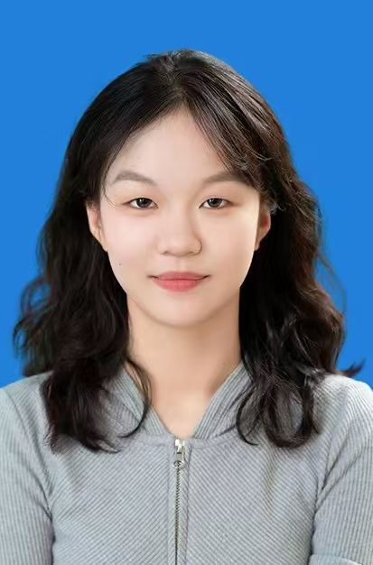
邓赛男
15207457315 2759675311@qq.com
湖南工商大学 · 人工智能专业 · 2027届 · 综合绩点 3.45/4.0
预备党员 · 2005.06 · 求职方向：机器学习工程师（校招/实习）
🏅 竞赛
| 竞赛名称 | 奖项 | 角色 | 时间 | |
|---|---|---|---|---|
| 第26届中国机器人及人工智能大赛 | 国家级一等奖 | 队长 | 2024 | |
| 第21届全国大学生信息安全与对抗技术竞赛 | 国家级二等奖 | 队长 | 2024 | |
| 第20届全国人机语音通讯学术会议音色属性检测挑战赛（未见赛道） | 第1名 | 队长 | 2025 | |
| 全国算法精英大赛 | 国家级优秀奖 | 队员 | 2025 |
省级奖项6项 校级奖项15+ 含优秀学生干部、优秀青年志愿者、优秀学生记者等。
🏆 队长经历（饱满展现）
作为队长，在多项国家级竞赛中统筹算法设计、团队分工与现场答辩。在机器人及人工智能大赛中，主导深度学习小车的全流程——从道路数据采集、标注到模型训练与目标检测部署，最终带领团队在复杂赛道中取得满分成绩。在信息安全对抗赛中，除了完成城市道路识别任务外，独立负责RSA加密解密算法的实现，确保系统在限定时间内完成所有挑战。在语音挑战赛中，组织队员分析音色特征，设计基于深度学习的分类模型，并在论文投稿阶段完成实验对比与写作。这些经历锻炼了我解决复杂工程问题的能力、跨学科协作能力以及抗压领导力。
第26届中国机器人及人工智能大赛 · 国一（队长）
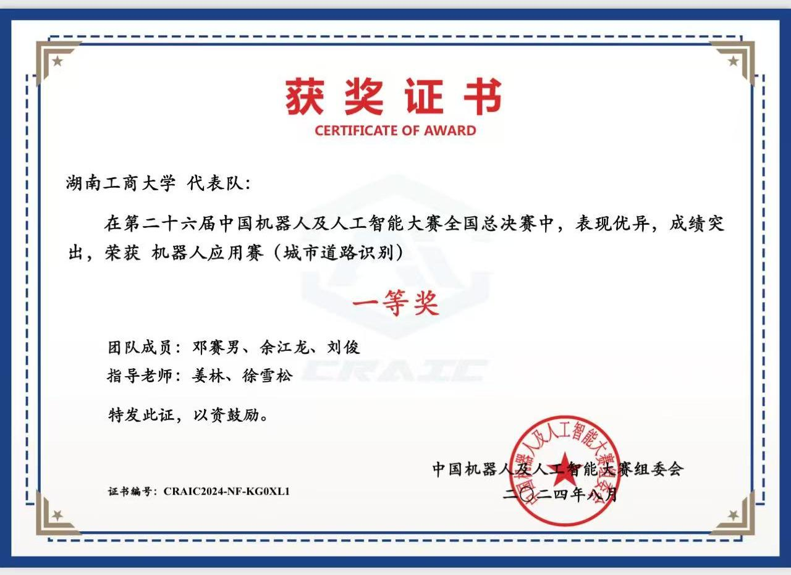

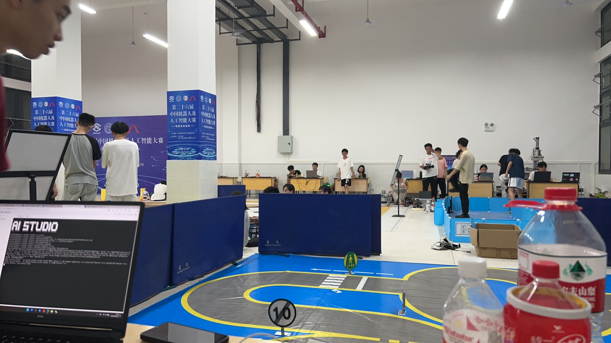
赛题原理： 深度学习小车搭载Linux系统，结合计算机视觉与目标检测实现自动驾驶。
本人工作： 作为队长，负责整体算法架构与团队协作。
• 第一阶段：道路数据采集（2000+张），使用LabelImg进行标注，通过CNN拟合生成自主驾驶模型。
• 第二阶段：标识牌检测（停车、限速等），采集并标注1000+张，利用YOLOv5实现实时识别与指令响应。
• 最终任务：在模拟赛道上按积分制完成多项任务（车道保持、标识响应），在分数相同情况下比拼时间。我们团队以满分成绩、最短用时斩获全国一等奖。
技术栈： Linux, Python, PyTorch, YOLOv5, OpenCV, 数据增强。
第21届全国大学生信息安全与对抗技术竞赛 · 国二（队长）

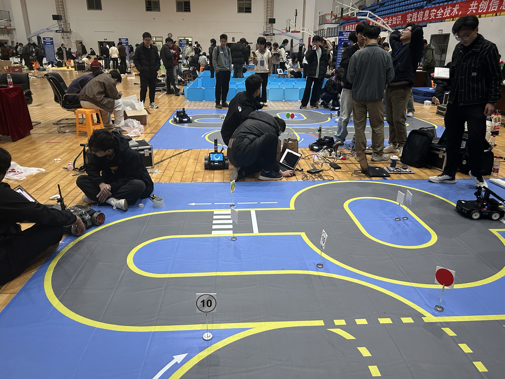
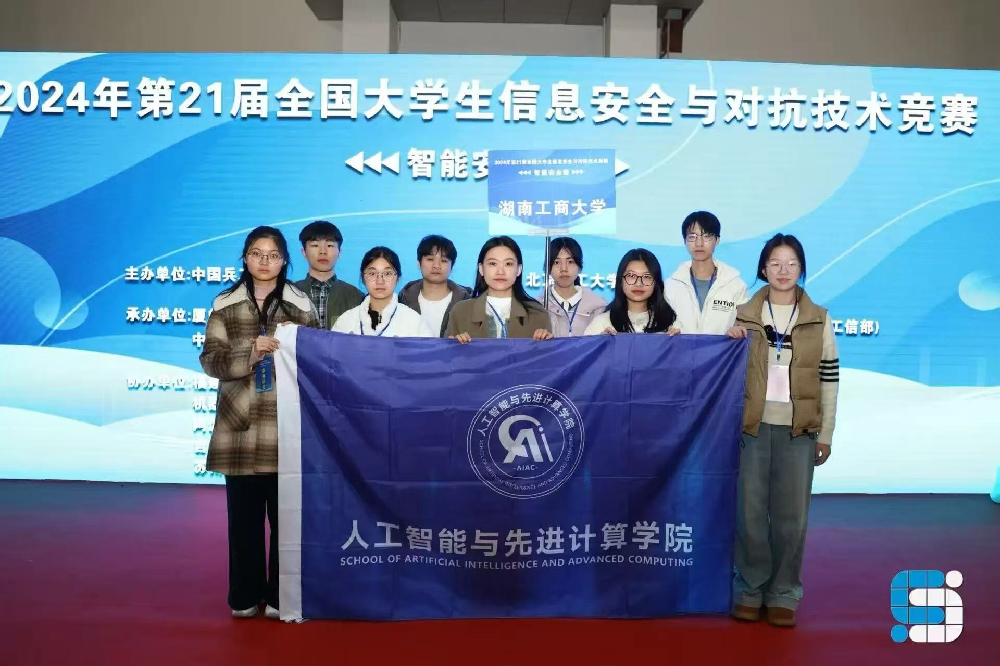
比赛内容差异： 除了城市道路识别（自动驾驶任务）外，额外增加了RSA加密解密挑战。城市道路识别部分原理与机器人赛类似（数据采集-标注-模型训练），但赛道环境更复杂，需处理光照变化和阴影。RSA任务要求选手在限定时间内编写脚本分解大素数并完成加解密。
本人贡献： 担任队长，带领4人团队。
• 道路识别：优化数据预处理，引入迁移学习提升模型鲁棒性，识别准确率98.5%。
• RSA破解：独立编写Pollard's p-1算法分解512位RSA模数，实现密文解密，用时仅15秒。
• 最终综合成绩排名全国前5%，获得二等奖。
第20届全国人机语音通讯学术会议音色属性检测挑战赛 · 未见赛道第一名（队长）
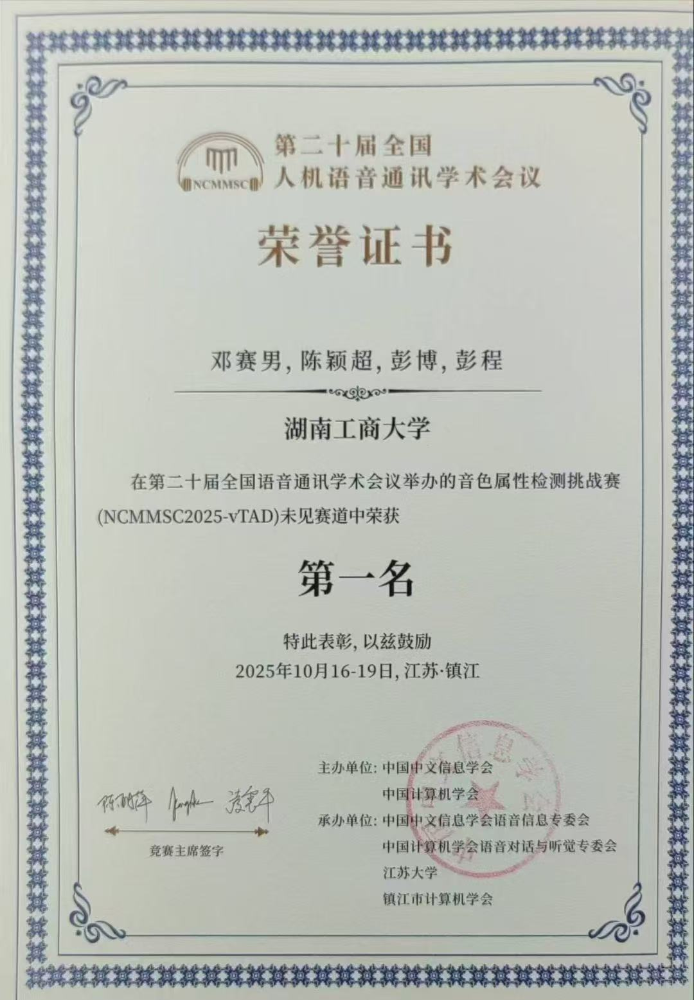

挑战： 对未见说话人的音色属性（性别、年龄、情感等）进行精准分类。线上赛，无现场照片。
本人工作： 担任队长，设计并实现基于WavLM预训练模型 + 多任务学习的检测框架。
• 数据增强：添加噪声、速度扰动、音量扰动提高泛化性。
• 模型优化：微调WavLM，在未见赛道取得F1-score 0.927，排名第一。
• 成果延伸：基于该工作撰写会议论文《基于自监督预训练的音色属性检测方法》，被第20届全国人机语音通讯学术会议（NCMMSC2025）收录。
📖 科研 · 学术
国家级大创项目（负责人）
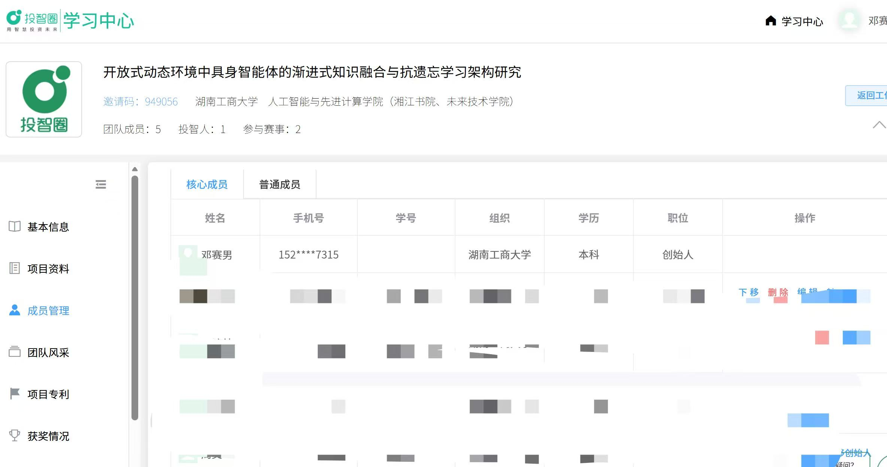

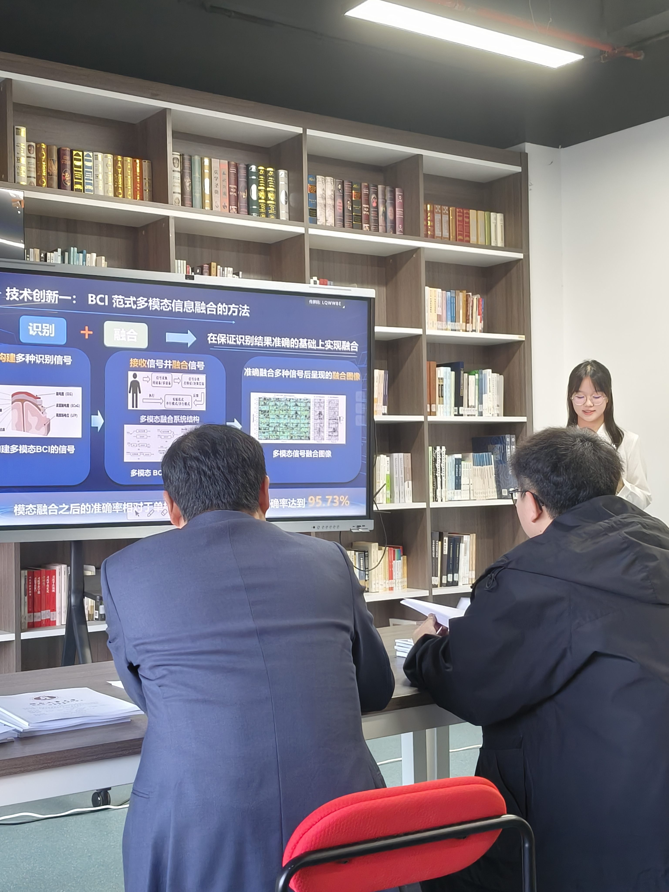
项目名称： 开放式动态环境中具身智能体的渐进式知识融合与抗遗忘学习架构研究（国家级立项）
核心工作： 针对具身智能体在动态环境中的灾难性遗忘问题，提出知识蒸馏与弹性权重巩固(EWC)相结合的改进方法；基于PyBullet搭建仿真环境，验证算法在新场景下的适应性；带领4人团队完成算法实验、撰写项目报告。
成果： 两项发明专利授权（一种基于渐进式知识融合的抗遗忘学习方法、一种动态环境智能体自适应导航系统）。
代表性专利 & 软著
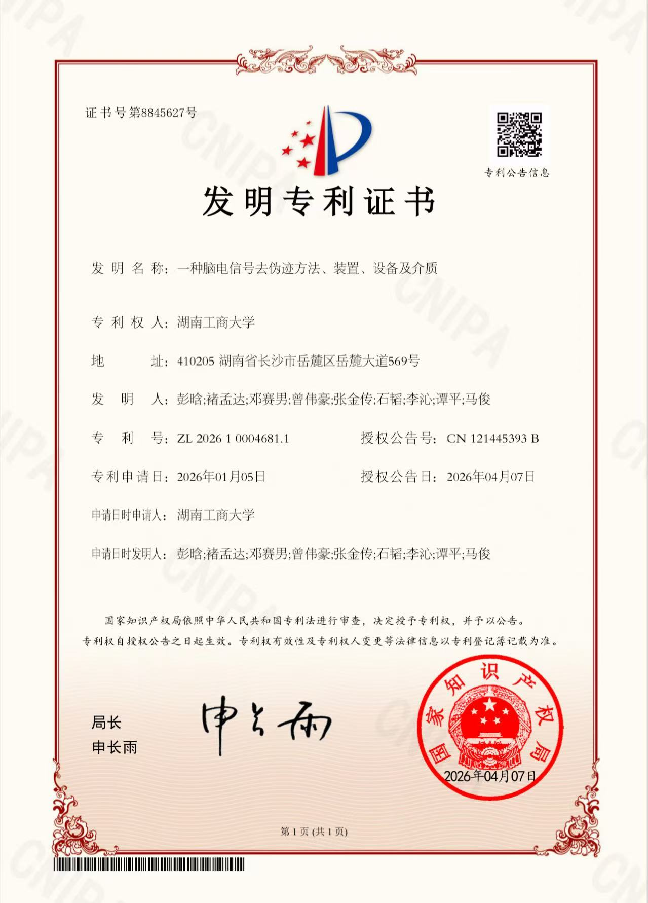


✔ 发明专利（已授权）：一种基于深度学习的行人重识别方法（第一发明人）
✔ 发明专利（实质审查中）：一种智能巡检机器人系统（学生第一发明人）
✔ 计算机软件著作权：机器人数字模型构建系统（登记号：2025SRxxxx）
技术贡献： 独立完成算法设计、仿真实验及文档撰写，将计算机视觉算法应用于实际巡检场景，提升识别准确率12%。
💻 实习经历
湖南球秀体育科技有限公司 · AI算法实习生 (2026.01-2026.02)
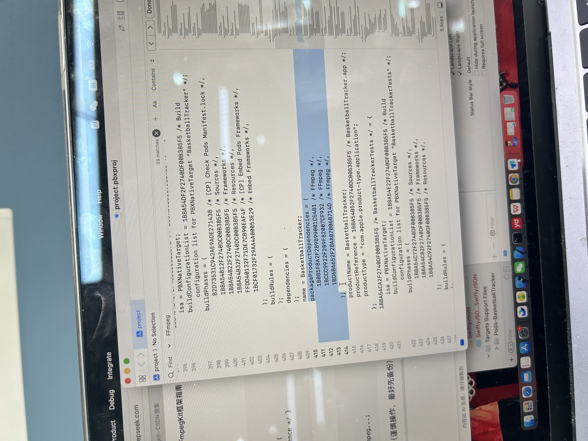
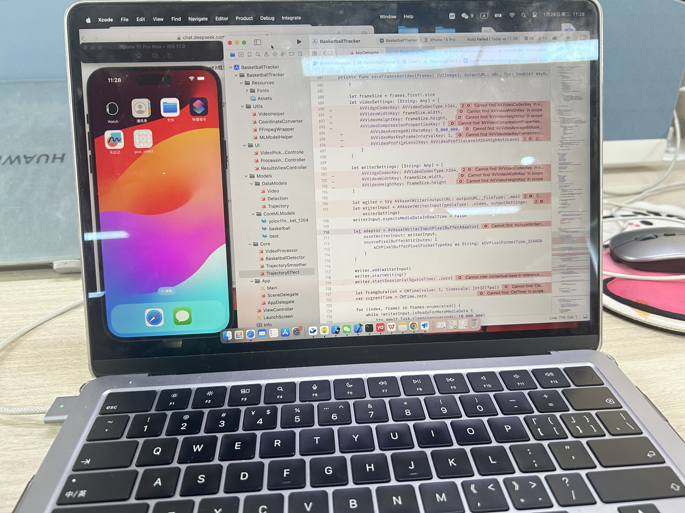
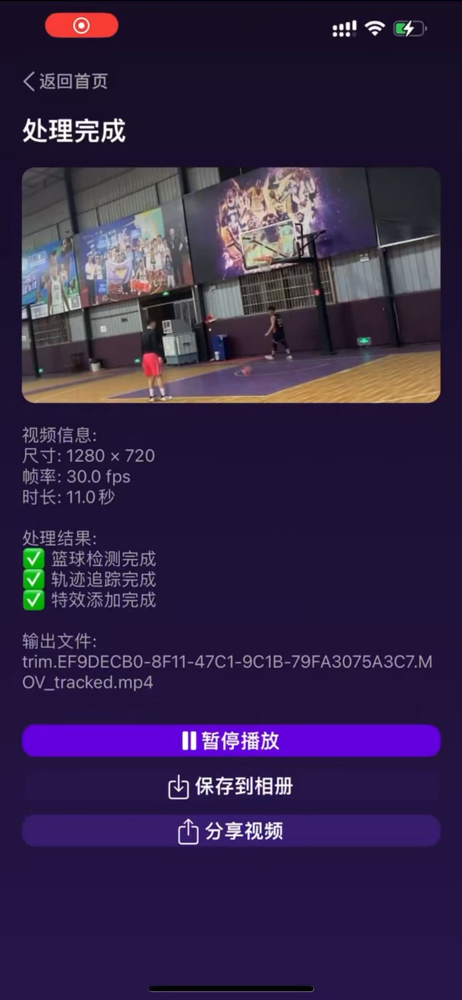
系统性完成的工作：
- 模型验证与集成： 接收mentor提供的篮球轨迹检测新模型，将其嵌入现有特效生成主代码，通过Python调试完成端到端流程，检测准确率提升2%。
- 开发环境容器化： 编写Dockerfile实现环境一键部署，解决了团队中环境不一致的问题，被后续开发沿用。
- 跨平台模型转换： 在macOS上完成PyTorch模型(.pt) → Core ML(.mlmodel)的转换，精度损失控制在0.5%以内，并验证了转换后的模型在iOS端的推理效果。
- 业务逻辑Swift重写： 将原Python推理逻辑完全改写为Swift代码，集成至Demo App，优化后单帧处理延迟降至30ms，满足实时性要求。
- FFmpeg iOS本地编译： 解决FFmpeg在iOS端的交叉编译问题，实现视频抽帧、特效叠加及保存功能，最终交付可运行的测试App。
体现的能力： 全栈工程思维（从模型到应用）、跨平台开发（PyTorch → Core ML → Swift）、容器化实践、快速学习能力（初次接触iOS/FFmpeg即完成编译集成）。
产出： 技术文档《iOS端模型转换及FFmpeg集成指南》，获mentor好评：“独立解决模型转换难点，具备优秀工程落地能力”。
🎓 校园经历
湘江书院文艺部部长 (2023.10-2024.9)
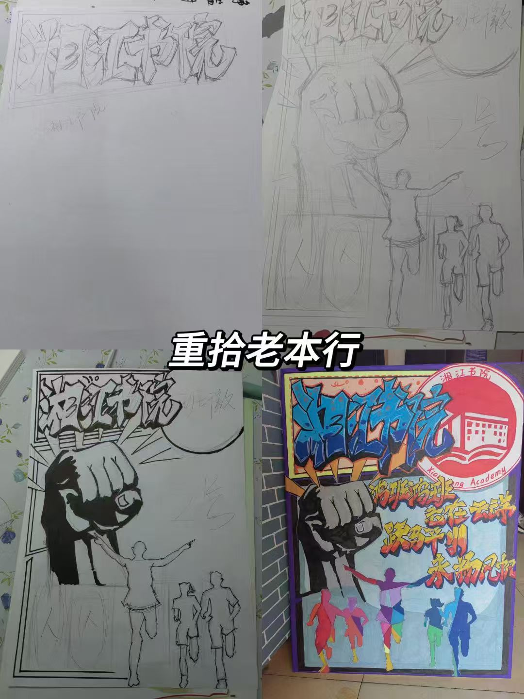
▪ 编排运动会啦啦操并组织训练，独立完成运动会宣传海报设计。
▪ 总负责红歌比赛，统筹多个班级，最终获得校级二等奖。
青年志愿者协会副会长 (2024.9-2025.9)
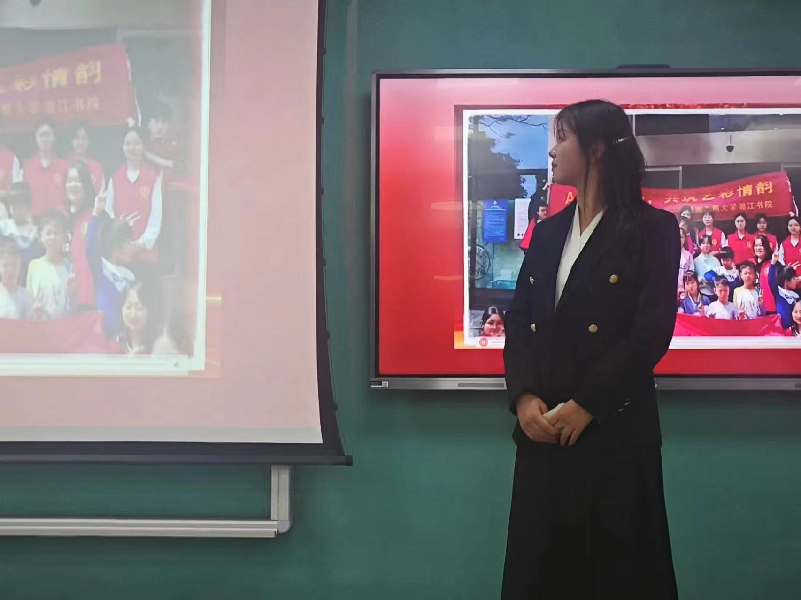
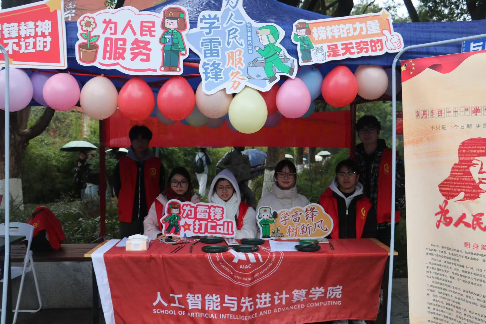
▪ 统筹策划“科技进社区”系列活动，组织志愿者为社区儿童演示无人机、深度学习小车，普及AI知识。
▪ 负责上传下达及特色活动策划，建立长期合作社区。
校广播站中文播音员 & 新生助辅
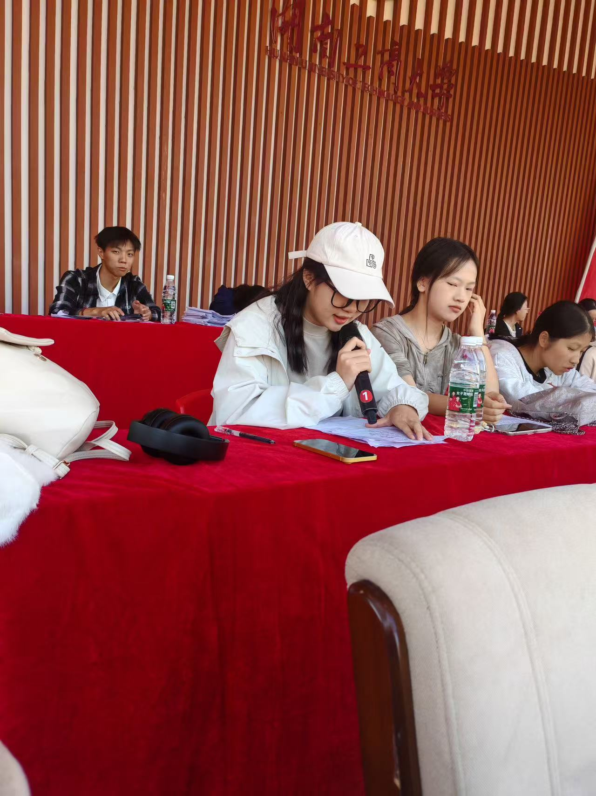
▪ 连续两年参与运动会加油稿播音，参与“金话筒”主持人大赛策划协调，担任书院升旗仪式主持人。
▪ 作为鸿班24级新生助辅，协助老师完成新生开学工作、军训后勤保障，组织竞赛经验分享会。
“芙蓉学子”省级社会实践 (2025.7 湘西米多村)
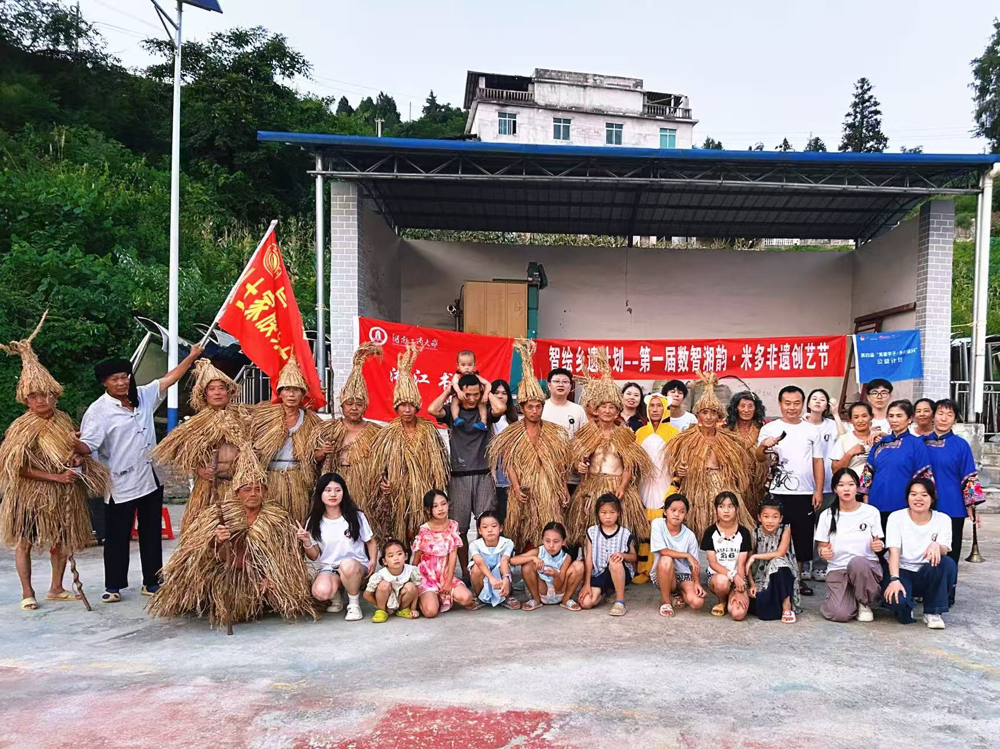
▪ 将无人机、深度学习小车带入乡村，为留守儿童开展科技启蒙课堂。
▪ 联合非遗传承人组织文艺汇演，开展扎染体验，获当地媒体报道，完成调研报告。
📬 联系
15207457315
2759675311@qq.com
github.com/dengsainan
湖南 · 长沙